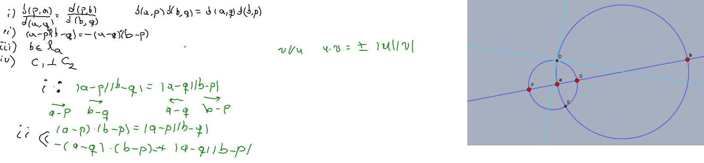
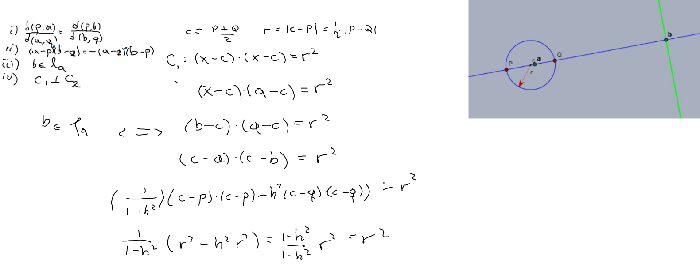
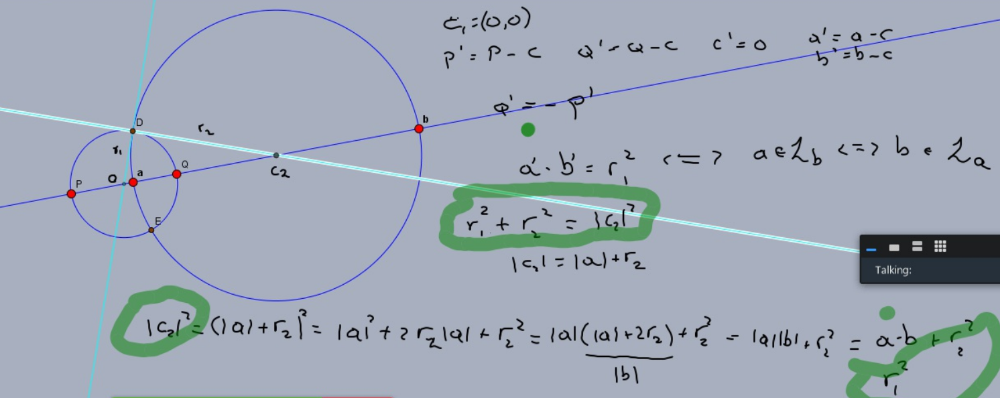

Teorema Sean P,Q,a,b cuatro puntos colineales, y sean C1 y C2 los círculos con diámetro PQ y ab respectivamente. Entonces son equivalentes:
Las parejas P,Q y a,b son armónicas
Se cumple que (a−P)⋅(b−Q)=−(a−Q)⋅(b−P)
El punto b está en la línea polar de a respecto a C1.
Los círculos C1 y C2 se intersectan ortogonalmente.



Excentricidad
Consideramos ahora un foco P y una directriz L dados y la ecuación d(x,P)=ed(x,L), conocida para e=1, afirmamos que para 0<e<1 se trata de una elipse y para e>1 de una hipérbola.